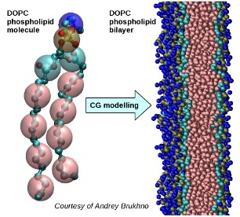

Coarse-graining¶
This page provides an overview of coarse-graining in molecular modelling.
The text makes references to DL_POLY, DL_MESO and DL_FIELD, but it is also applicable to other packages.

While some properties of various materials depend on the detailed make-up and structure of their molecules at atomic or even electronic scales, many other properties depend more on effects at larger scales. For instance, the structures that proteins, lipids or surfactants can form depend mainly on their quantities (concentrations) in large amounts of a bulk solvent (e.g. water).
Coarse-graining (CG) is an approach to simplify molecular models by gathering together atoms into larger particles (‘pseudo-atoms’ or ‘beads’) and working out how these particles interact. This reduces the degrees of freedom required for a simulation but also reduces the number of particles involved, decreasing computation time and increasing the system sizes and time scales that can be obtained compared with fully atomistic methods.
An example is given below of a phospholipid molecule, dioleoylphosphatidylcholine (DOPC), which has been coarse-grained into a representation with 12 beads per molecule from its original atom-based representation of 50 heavy atoms (carbon, oxygen, nitrogen and phosphorous) and 80 hydrogens. A large number of these CG molecules were subsequently used to model a bilayer.
{kind=link}
If a CG bead is quite large, i.e. it contains a large number of atoms or molecules, it can be considered as a subthermodynamic population. As well as moving together on average, the atoms inside the bead can often move around individually and interact with each other.
We can still use the same basic modelling techniques, e.g. molecular dynamics (MD) or Monte Carlo (MC), for CG simulations as for fully atomistic (all atom) simulations. The main differences are the force field (FF) and that each particle in a simulation will be a bead rather than an atom, although most MD and MC codes do not need to make that distinction to be able to run a CG calculation.
Hydrodynamic effects start to become more important at higher degrees of coarse-graining (numbers of atoms per bead) and larger length scales. Systems at those scales might benefit from using mesoscale modelling methods, e.g. Dissipative Particle Dynamics (DPD), which can use a CG force field to represent non-hydrodynamic (conservative) interactions between beads.
Note
The interaction model most frequently used in DPD simulations is a simplified representation of potentials found by coarse-graining polymer melts.
Pre-existing CG force fields
Force fields (FFs) have been developed for coarse-grained representations of various classes of molecules in a similar manner to atomic FFs. These are often based on similar potential functions to those used in atomic FFs, for bonded and non-bonded interactions. The FFs comprise of parameters usually fitted using a top-down approach, i.e. by matching properties obtained at larger scales from experiments.
The simplest CG schemes are united atom (UA) models [Lustig1988]. These incorporate hydrogen atoms into the heavy atoms (e.g. carbon) to which they are bonded, removing the need to model light H atoms explicitly. UA models are often used for large hydrocarbon molecules, with beads consisting of different numbers of H atoms, e.g. CH\(_{2}\), CH\(_{3}\), CH\(_{4}\).
DL_FIELD currently has two UA models available for DL_POLY simulation setup: CHARMM19 for proteins (amino acids) and G54A7 for biomolecules (amino acids, lipids).
- TIP
Many PDB files obtained from crystallography experiments do not contain hydrogen atoms due to insufficient resolution. These can be used directly in DL_FIELD when applying its UA models.
Martini is a general-purpose CG force field for biomolecular systems involving a wide variety of molecules (e.g. proteins, surfactants, peptides, polymers) [Marrink2007] [Souza2021]. Each bead generally consists of four heavy atoms along with any attached hydrogens. Bonded interactions are chosen to match bond properties with those obtained from full atom models, while the beads otherwise interact with force-shifted Lennard-Jones (12-6) and Coulombic potentials.
There are variants for each bead based on polarisability and/or net charges, including a polarisable water bead with embedded charges. A version of Martini with implicit solvent (Dry Martini) [Arnarez2015] can be used to avoid modelling water beads: this can massively speed up simulations as a result.
Constructing bespoke CG force-fields
The choices made in developing the above CG FFs - mappings of atoms to beads, functional forms of vdW and bonded potentials, and chosen properties for top-down parameter fitting - limit their applicability and accuracy.
Alternative bottom-up approaches exist to derive FFs for specific systems. These use the results of smaller scale (atomistic) simulations - ranging from radial distribution functions (RDFs) to full MD trajectories - and derive interactions for beads to find the best fits to these data. Some of the techniques include:
Inverse Monte Carlo - Uses a Monte Carlo procedure to iterate an interaction potential to fit to required RDFs [Lyubartsev1995]
Iterative Boltzmann Inversion - Iterates a CG potential using deviations of potentials of mean force (related to RDFs) between the atomistic FF and the proposed CG FF [Reith2003]
Force matching - Finds interaction forces on CG beads that correspond to ensemble averages of those acting on the atoms inside the beads [Noid2008]
Relative entropy minimisation - Uses the relative entropy as a measure of discrepancies from reference data to improve a pre-existing CG force field [ScottShell2008]
While these methods can be used with specific functional forms of potentials to fit their parameters, the resulting interactions are more often expressed in tabulated form, i.e. as values of potentials or forces corresponding to equally-spaced distances (or angles) which can be interpolated during MD simulations.
The VOTCA software package is a toolkit that can process atomic simulation data and apply the above techniques to obtain CG FFs. It includes an interface to work with DL_POLY files as inputs and outputs to coarse-grain an atomic system using one of the above methods and provide files to carry out a CG MD calculation using the derived FF (given in tabulated form) in DL_POLY_5.
- TIP
The DL_POLY interface in VOTCA has only been tested for Inverse Monte Carlo and Iterative Boltzmann Inversion: it might also work with force matching.
Obtaining dynamics at CG level
It is possible to parameterise a CG model to obtain dynamic properties. The most frequently used dynamic property for model fitting is self-diffusivity, which can be calculated from equilibrium MD (or DPD) simulations at any scale using mean-squared displacements (MSDs) or velocity autocorrelation functions (VAFs).
Some care may be needed when modelling dynamic properties using a CG model, depending on the level of coarse-graining and the related reduction in degrees of freedom. For instance, if a CG model of water includes \(N\) molecules per bead, the self-diffusivity of the CG beads will be \(\frac{1}{N}\) of the value obtained from a full atom or united atom model. Notwithstanding this caveat, the same thermostat and parameters can often be used for both full atom and CG MD calculations of the same system.
It is possible to determine the functional form and parameters for DPD dissipative forces systematically from full atom MD trajectories by calculating ensemble averages of pairwise forces and relative velocities for CG beads [Sokhan2021]. The resulting tabulated functions with respect to distances between bead pairs can be used as inputs for DPD calculations with DL_MESO.
References
- Lustig1988
R Lustig and WA Steele, On the thermodynamics of liquid propane, Molecular Physics, 65, p. 475-486, 1988, doi: 10.1080/00268978800101181.
- Marrink2007
SJ Marrink, HJ Risselada, S Yefimov, DP Tieleman and AH de Vries, The MARTINI force field: coarse grained model for biomolecular simulations, Journal of Physical Chemistry B, 111, p. 7812–7824, 2007, doi: 10.1021/jp071097f.
- Souza2021
PCT Souza, R Alessandri, J Barnoud, S Thallmair, I Faustino, F Grünewald, I Patmanidis, H Abdizadeh, BMH Bruininks, TS Wassenaar, PC Kroon, J Melcr, V Nieto, V Corradi, HM Khan, J Domański, M Javanainen, H Martinez-Seara, N Reuter, RB Best, I Vattulainen, L Monticelli, X Periole, DP Tieleman, AH de Vries and SJ Marrink, Martini 3: a general purpose force field for coarse-grained molecular dynamics, Nature Methods, 18, p. 382-388, 2021, doi: 10.1038/s41592-021-01098-3.
- Arnarez2015
C Arnarez, JJ Uusitalo, MF Masman, HI Ingólfsson, DH de Jong, MN Melo, X Periole, AH de Vries and SJ Marrink, Dry Martini, a coarse-grained force field for lipid membrane simulations with implicit solvent, Journal of Chemical Theory and Computation, 11, 260-275, 2015. doi: 10.1021/ct500477k.
- Lyubartsev1995
AP Lyubartsev and A Laaksonen, Calculation of effective interaction potentials from radial distribution functions: A reverse Monte Carlo approach, Physical Review E, 52, 3730-3737, 1995, doi: 10.1103/PhysRevE.52.3730.
- Reith2003
D Reith, M Pütz and F Müller-Plathe, Deriving effective mesoscale potentials from atomistic simulations, Journal of Computational Chemistry, 24, 1624-1636, 2003, doi: 10.1002/jcc.10307.
- Noid2008
WG Noid, J-W Chu, GS Ayton, V Krishna, S Izvekov, GA Voth, A Das and HC Andersen, The multiscale coarse-graining method. I. A rigorous bridge between atomistic and coarse-grained models, Journal of Chemical Physics, 128, 244114, 2008, doi: 10.1063/1.2938860.
- ScottShell2008
M Scott Shell, The relative entropy is fundamental to multiscale and inverse thermodynamic problems, Journal of Chemical Physics, 129, 144108, 2008, doi: 10.1063/1.2992060.
- Sokhan2021
VP Sokhan and IT Todorov, Dissipative particle dynamics: dissipative forces from atomistic simulation, Molecular Simulation, 47, 248-256, 2021, doi: 10.1080/08927022.2019.1578353.